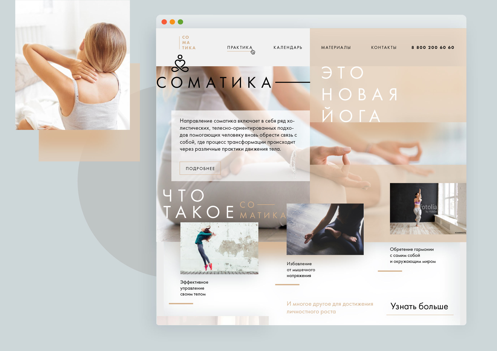
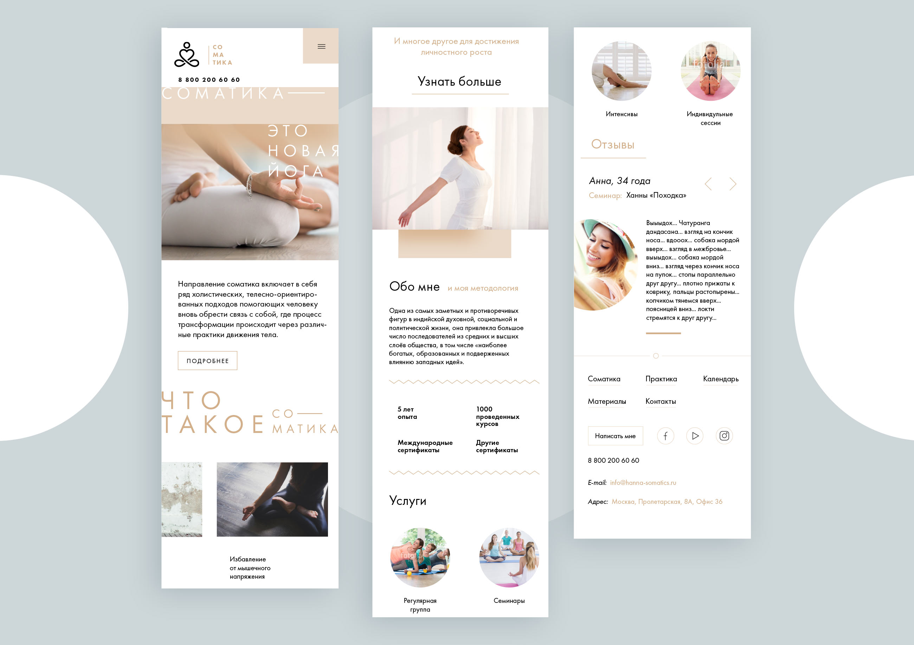
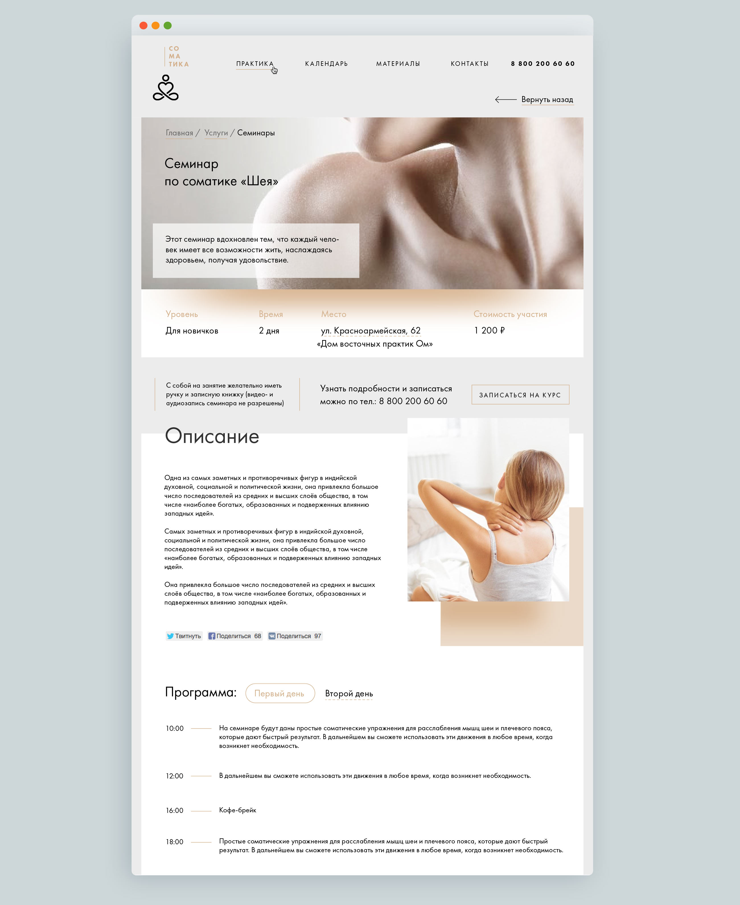

An incredibly light and airy site about one of yoga schools.
Accurate fonts and pastel colors create a pleasant feeling of lightness.

Mobile version:

Inner page template:

The site remained a set of pictures. The client accepted and approved the concept, but the resources were redistributed to other areas of business. But what lovely pictures!